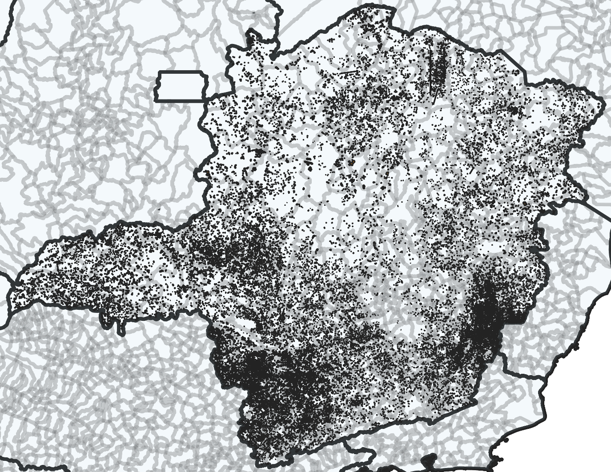
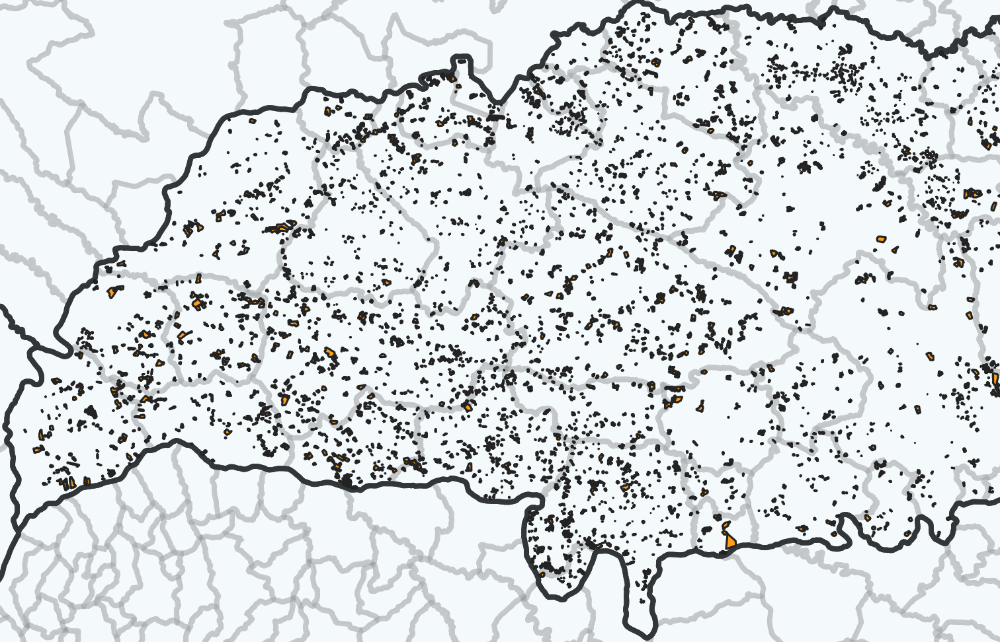
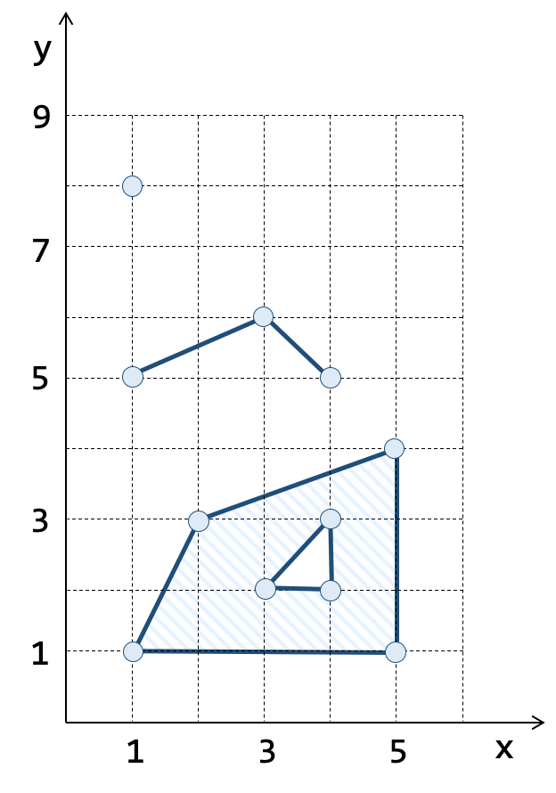
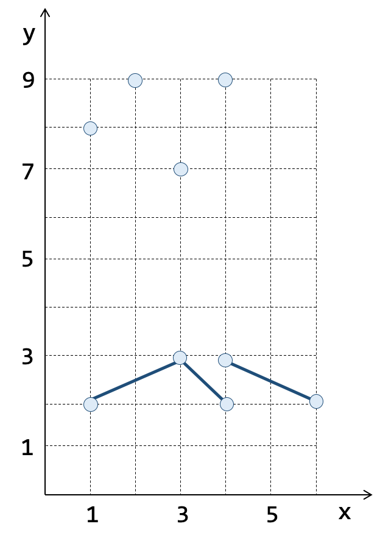
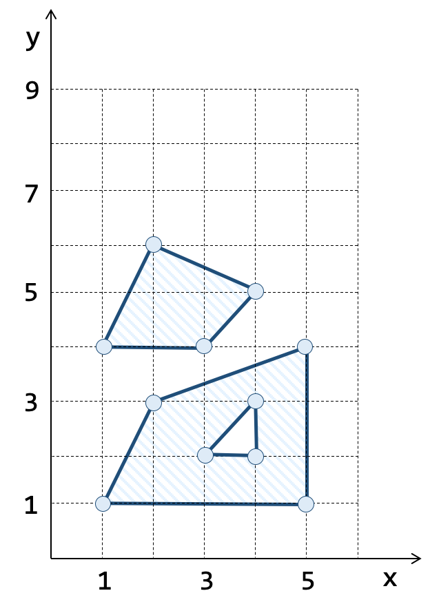

3.1.10. Glebas de Operações Contratadas com Recursos Públicos
Como parte dos microdados do Sicor disponibilizados publicamente, encontram-se as glebas associadas às operações de crédito contratadas com recursos públicos. As figuras mostradas na Tabela 3.10 são um recorte temporal (2022) e espacial (Minas Gerais e Triângulo Mineiro) dessas glebas.
 |
 |
Esses microdados são disponibilizados no sítio do Banco Central em arquivos no formato CSV, particionados por ano, entre 2013 e 2024, como mostrado abaixo:
A estrutura desses arquivos pode ser vista na Tabela 3.11.
nome |
tipo |
descrição |
|
|---|---|---|---|
PK, FK |
ref_bacen |
integer |
Número mascarado de referência do contrato |
PK, FK |
nu_ordem |
integer |
Número da destinação/finalidade dentro do contrato |
PK |
nu_indice |
integer |
Identificador da gleba dentro da operação |
gt_geometria |
text |
Geometria da gleba no formato Well-Know Text (WKT) |
No Sicor, as glebas são representadas textualmente utilizando uma notação conhecida por Well-Know Text ou WKT, que permite representar elementos geométricos tais como geometrias elementares (pontos, linhas e polígonos) e coleções homogêneas de geometrias (coleção de pontos, coleção de linhas e coleção de polígonos), conforme pode ser visto na Tabela 3.12.
( a ) Geometrias Simples |
( b ) Coleções Pontos e Linhas |
( c ) Coleções Polígonos |
 |
 |
 |
Na notação WKT, o ponto de coordenadas \(x = 1\) e \(y = 8\) mostrado na Tabela 3.12a, é descrito pela seguinte cadeia de caracteres ou string:
'POINT(1 8)'
A linha definida a partir de interpolações lineares de três vértices consecutivos mostrada na Tabela 3.12a é descrita pela seguinte string:
'LINESTRING(1 5, 3 6, 4 5)'
O polígono simples, formado por um anel externo e um anel interno, mostrado na Tabela 3.12a é descrito pela seguinte string:
'POLYGON( (1 1, 2 3, 5 4, 5 1, 1 1), (3 2, 4 3, 4 2, 3 2) )'
A coleção de pontos mostrada na Tabela 3.12b, é descrita por:
'MULTIPOINT(1 8, 3 7, 4 9, 2 9)'
A coleção de linhas (Tabela 3.12b), é descrita por:
'MULTILINESTRING( (1 2, 3 3, 4 2), (4 3, 6 2) )'
Finalmente, a coleção de polígonos (Tabela 3.12c), é descrita por:
'MULTIPOLYGON( ( (1 4, 2 6, 4 5, 3 4, 1 4) ),
( (1 1, 2 3, 5 4, 5 1, 1 1), (3 2, 4 3, 4 2, 3 2) ) )'
A coluna gt_geometria , portanto, pode conter elementos geométricos descritos no formato WKT. As geometrias no Sicor são codificadas em coordenadas geográficas (LAT/LONG) no sistema geodésico de referência SIRGAS 2000.
Dica
As geotecnologias que utilizam códigos EPSG para referenciar sistemas de referecial espacial (SRS) definem o código EPSG:4674 para coordenadas geográficas (LAT/LONG) no sistema geodésico de referência SIRGAS 2000.
Os arquivos listados acima foram carregados na tabela sicor_glebas_wkt do banco de dados PostgreSQL. A Figura 3.3 apresenta o relacionamento dessa tabela com a tabela de operações contratadas.
{kind=link}
Figura 3.3 - Diagrama Entidade-Relacionamento das glebas de contratações com recursos públicos (simplificado).
No diagrama acima, as colunas ref_bacen e nu_ordem relacionam com as respectivas colunas da tabela sicor_operacao_basica_estado, ligando a geometria de uma gleba à operação de contratação de crédito (Seção 3.1.9 - Operações Contratadas com Recursos Públicos e Privados).
A organização dos dados nessa tabela de glebas permite que mais de uma geometria seja associada a uma mesma operação, por isso a coluna nu_indice faz parte da chave primária da tabela.
Dica
O comando SQL para definição dessa tabela no PostgreSQL é apresentado no Trecho de Código 3.8.
--
-- Tabela: Glebas de operações em formato WKT.
--
CREATE TABLE sicor_glebas_wkt
(
ref_bacen INTEGER NOT NULL,
nu_ordem INTEGER NOT NULL,
nu_indice INTEGER NOT NULL,
gt_geometria TEXT NOT NULL
);
--
-- Definição de chave primária formada pelos campos ref_bacen, nu_ordem e nu_indice.
--
ALTER TABLE sicor_glebas_wkt ADD CONSTRAINT sicor_glebas_wkt_pkey PRIMARY KEY (ref_bacen, nu_ordem, nu_indice);
--
-- Definição de integridade referencial entre as sicor_operacao_basica_estado e tabelas sicor_glebas_wkt
--
ALTER TABLE sicor_glebas_wkt ADD CONSTRAINT sicor_glebas_wkt_ref_bacen_fkey
FOREIGN KEY(ref_bacen, nu_ordem) REFERENCES sicor_operacao_basica_estado(ref_bacen, nu_ordem)
ON UPDATE CASCADE
ON DELETE NO ACTION;
Dica
O PostgreSQL fornece um comando para uso via SQL chamado COPY que permite mover dados de arquivos para tabelas do banco de dados e vice-versa. Este comando permite lidar com arquivos texto, CSV e binários. Esse comando de importação e exportação de dados é usado pelo meta-comando \copy dos aplicativos psql e pgAdmin. Portanto, para carregar o arquivo CSV contendo as glebas do ano de 2022 para a tabela sicor_glebas_wkt podemos usar o seguinte comando:
\copy sicor_glebas_wkt FROM '/dados/sicor_glebas_wkt_2022.csv'
WITH (DELIMITER ';', FORMAT CSV, HEADER, ENCODING 'WIN1252');
A representação WKT trata-se apenas de um texto e como tal, não permite realizar operações geométricas diretamente, como o cálculo de área e de perímetro. Logo, o formato WKT usado pelo Sicor na representação das glebas precisa ser transformado em um tipo de dado do PostgreSQL que permita realizar essas operações. O tipo PostGIS Geometry permite representar geometrias no Plano Cartesiano e pode ser construído a partir de um texto WKT através de uma operação de coerção de tipo, que consiste na transformação da string WKT em um objeto geométrico do PostGIS utilizando o operador de cast ::. Por exemplo, para converter um polígono representado em WKT para uma geometria do PostGIS do tipo polygon associado ao SRS 4674, podemos fazer:
SELECT 'POLYGON( (1 1, 2 3, 5 4, 5 1, 1 1), (3 2, 4 3, 4 2, 3 2) )'::geometry(POLYGON, 4674);
O resultado do comando acima é uma geometria no formato binário do PostGIS (EWKB) que é apresentado na forma de uma string codificada em hexadecimal (HEXEWKB):
geometry
----------------------------------------------------------------------------------------------
0103000020421200000200000005000000000000000000F03F00000000...00000000000008400000000000000040
(1 row)
O tipo PostGIS Geometry suporta diversas operações, entre elas:
Entrada e Saída:
ST_GeomFromText,ST_AsWKT,ST_AsGeoJSON.Propriedades:
ST_GeometryType,ST_IsSimple,ST_Envelope,ST_Zmflag.Métricas:
ST_Area,ST_Perimeter,ST_Distance.Relacionamentos espaciais ou relacionamentos topológicos:
ST_Contains,ST_Within,ST_Covers,ST_CoveredBy` , ``ST_Crosses,ST_Overlaps,ST_Equals,ST_Disjoint,ST_Intersects.Conjunto:
ST_Intersection,ST_UnionST_Difference,ST_SymDifference.Construções geométricas:
ST_Buffer,ST_Centroid,ST_PointOnSurface,ST_GeneratePoints,ST_MinimumBoundingCircle,ST_OrientedEnvelope.
Para ilustrar o uso do tipo PostGIS Geometry, vamos construir uma consulta SQL que compute o total de geometrias de cada tipo (Trecho de Código 3.9). Para isso, iremos transformar o texto WKT da coluna gt_geometria em um objeto geométrico e, em seguida, utilizar a função ST_GeometryType para determinar o seu tipo.
SELECT ST_GeometryType(gt_geometria::GEOMETRY) AS tipo_geometrico,
COUNT(*) AS num_geometrias
FROM sicor_glebas_wkt
GROUP BY tipo_geometrico
ORDER BY tipo_geometrico;
Saída:
tipo_geometrico | num_geometrias
-----------------+----------------
ST_MultiPolygon | 11159
ST_Point | 3940
ST_Polygon | 5801274
(3 rows)
Portanto, considerando todos os microdados de glebas[1], pode ser observado a existência de 5.816.381 geometrias divididas nos seguintes tipos:
Point: 3.940
Polygon: 5.801.274
MultiPolygon: 11.159
Para obter os tipos geométricos das glebas e o total desses tipos em cada ano, é necessário construir uma consulta incluindo a tabela sicor_operacao_basica_estado, que se relaciona com a tabela sicor_glebas_wkt e possui a coluna dt_emissao que contém o registro das datas de contratação dos financiamentos. Portanto, esta consulta precisa utilizar as tabelas sicor_glebas_wkt e sicor_operacao_basica_estado, relacionando os campos associados, ref_bacen e nu_ordem e deve usar o ano da data de contratação (dt_emissao) e o tipo geométrico (ST_GeometryType) para definir o agrupamento para a totalização dos tipos geométricos (Trecho de Código 3.10).
SELECT Extract(YEAR from contratos.dt_emissao) AS ano,
ST_GeometryType(gt_geometria::GEOMETRY) AS tipo_geometrico,
COUNT(*) AS num_geometrias
FROM sicor_glebas_wkt AS glebas,
sicor_operacao_basica_estado AS contratos
WHERE glebas.ref_bacen = contratos.ref_bacen
AND glebas.nu_ordem = contratos.nu_ordem
GROUP BY ano, tipo_geometrico
ORDER BY ano, tipo_geometrico;
A consulta acima irá retornar uma saída semelhante à mostrada abaixo:
ano | tipo_geometrico | num_geometrias
------+-----------------+----------------
2013 | ST_MultiPolygon | 63
2013 | ST_Polygon | 584
2014 | ST_MultiPolygon | 761
2014 | ST_Polygon | 1210
2015 | ST_MultiPolygon | 6360
2015 | ST_Polygon | 2589
2016 | ST_MultiPolygon | 3419
2016 | ST_Polygon | 87055
2017 | ST_MultiPolygon | 387
2017 | ST_Polygon | 315406
2018 | ST_MultiPolygon | 28
2018 | ST_Point | 182
2018 | ST_Polygon | 397443
2019 | ST_MultiPolygon | 12
2019 | ST_Point | 539
2019 | ST_Polygon | 611944
2020 | ST_MultiPolygon | 25
2020 | ST_Point | 3166
2020 | ST_Polygon | 889510
2021 | ST_MultiPolygon | 29
2021 | ST_Point | 53
2021 | ST_Polygon | 991082
2022 | ST_MultiPolygon | 39
2022 | ST_Polygon | 1073743
2023 | ST_MultiPolygon | 36
2023 | ST_Polygon | 1131550
2024 | ST_Polygon | 299158
(27 rows)
Outra avaliação que podemos fazer sobre as geometrias das glebas diz respeito à dimensão de suas coordenadas, isto é, se temos geometrias 2D e 3D. A função ST_Zmflag do PostGIS retorna um código informando se a dimensão das coordenadas é 2D, 3D, 4D ou 3D-M (no caso de uma das dimensões estar associada a medidas). A consulta apresentada no Techo de Código 3.11 mostra como obter essa informação.
SELECT Extract(YEAR from contratos.dt_emissao) AS ano,
CASE WHEN ST_Zmflag(gt_geometria::GEOMETRY) = 0 THEN '2D'
WHEN ST_Zmflag(gt_geometria::GEOMETRY) = 1 THEN '3D-M'
WHEN ST_Zmflag(gt_geometria::GEOMETRY) = 2 THEN '3D-Z'
WHEN ST_Zmflag(gt_geometria::GEOMETRY) = 3 THEN '4D'
ELSE 'ERRO'
END AS dimensao,
COUNT(*) AS num_geometrias
FROM sicor_glebas_wkt AS glebas,
sicor_operacao_basica_estado AS contratos
WHERE glebas.ref_bacen = contratos.ref_bacen
AND glebas.nu_ordem = contratos.nu_ordem
GROUP BY ano, dimensao
ORDER BY ano, dimensao;
ano | dimensao | num_geometrias
------+----------+----------------
2013 | 2D | 263
2013 | 3D | 384
2014 | 2D | 819
2014 | 3D | 1152
2015 | 2D | 6643
2015 | 3D | 2306
2016 | 2D | 3639
2016 | 3D | 86835
2017 | 2D | 518
2017 | 3D | 315275
2018 | 2D | 46
2018 | 3D | 397607
2019 | 2D | 30
2019 | 3D | 612465
2020 | 2D | 30
2020 | 3D | 892671
2021 | 2D | 41
2021 | 3D | 991123
2022 | 2D | 52
2022 | 3D | 1073730
2023 | 2D | 68
2023 | 3D | 1131518
2024 | 3D | 299158
(23 rows)
As geometrias são formadas em alguns casos por mais de uma parte, como pode ser observado no resultado da consulta mostrada no Techo de Código 3.12.
SELECT Extract(YEAR from contratos.dt_emissao) AS ano,
ST_GeometryType(gt_geometria::geometry) AS tipo_geometrico,
ST_NumGeometries(gt_geometria::geometry) AS num_partes,
COUNT(*) AS num_geometrias
FROM sicor_glebas_wkt AS glebas,
sicor_operacao_basica_estado AS contratos
WHERE glebas.ref_bacen = contratos.ref_bacen
AND glebas.nu_ordem = contratos.nu_ordem
GROUP BY ano, tipo_geometrico, num_partes
ORDER BY ano, tipo_geometrico, num_partes;
ano | tipo_geometrico | num_partes | num_geometrias
------+-----------------+------------+----------------
2013 | ST_MultiPolygon | 2 | 57
2013 | ST_MultiPolygon | 3 | 5
2013 | ST_MultiPolygon | 4 | 1
2013 | ST_Polygon | 1 | 584
2014 | ST_MultiPolygon | 2 | 295
2014 | ST_MultiPolygon | 3 | 77
2014 | ST_MultiPolygon | 4 | 62
...
2014 | ST_MultiPolygon | 42 | 1
2014 | ST_MultiPolygon | 46 | 1
2014 | ST_MultiPolygon | 50 | 1
2014 | ST_MultiPolygon | 58 | 1
...
2021 | ST_MultiPolygon | 2 | 27
2021 | ST_MultiPolygon | 3 | 1
2021 | ST_MultiPolygon | 4 | 1
2021 | ST_Point | 1 | 53
2021 | ST_Polygon | 1 | 991082
2022 | ST_MultiPolygon | 2 | 35
2022 | ST_MultiPolygon | 3 | 4
2022 | ST_Polygon | 1 | 1073743
2023 | ST_MultiPolygon | 2 | 36
2023 | ST_Polygon | 1 | 1131550
2024 | ST_Polygon | 1 | 299158
(207 rows)